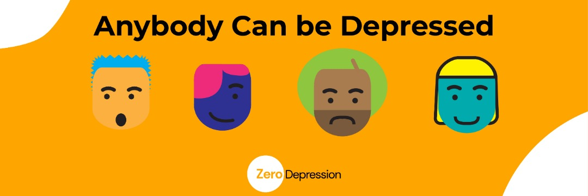

ANYBODY CAN BE DEPRESSED
Jane struggles daily to get out of bed. Waking up is the easy part, but finding the drive to move about the day is usually a herculean task....
Read Full PostBy Admin
26/03/2022


In recent times, there has been a high trend of depression cases and this mental disorder cuts across people from all age groups, backgrounds and nationalities. According to WHO's 2017 yearly report, an estimated 3.8% of the world population is affected with depression, which is approximately 280 million people. Wow! It doesn't help that in this part of the world, it's easier to wave off people with depression with the slang 'Na sapa dey worry you, no be depression' which is appalling, because unlike other mental disorders, depression sometimes occur in a way that is similar to mood swings and as such people who are depressed would probably think they have mood fluctuations and carry on in their depressive states without getting help. Also, the social stigma associated with people who suffer depression in this part of the world should be frowned upon because not only are they stigmatized, their condition is made very humorous that most times they become recluse, go back into their shells and carry on with their depressive moods and this doesn't help the society in the long run because they end up being a menace to their family, community, kindred etc
Depression is a mental and behavioral disorder that involves a persistent feeling of sadness,loss of interest and pleasure in activities. It's worth noting that it's a norm to feel sad or low sometimes but this feeling which is better known as mood swings usually stops after some time and it is quite different from depression, as depression is persistent, recurring and can last for a long time if help is not rendered
Whether it's the new mom who can't guess why she's feeling glum or that toddler who is all cranky or the teenager who wants to sleep all day and find nothing worth doing, depressive moods all have similar patterns of being sad, irritable, empty and hopeless. Lack of concentration, feelings of excessive low self-esteem and worth, loss of interest and pleasure in activities, increase in purposeless physical activity (e.g., inability to sit still, pacing, handwringing) or slowed movements or speech (these actions must be severe enough to be observable by others) Feeling worthless, thoughts of suicide, weight gain/loss which can't be traced to a dieting program are all inclusive of depressive symptoms. Although these symptoms might vary from mild to severe, symptoms of depression must last at least two weeks and a noticeable change in the level of functioning before depression can be diagnosed.
Researchers haven't been able to pinpoint a particular cause of
depression, as depression can be triggered or occur for a variety of
reasons which includes but not limited to:
Trauma and Abuse: People who have had traumatic
experience and people who have suffered abuse(emotional, sexual,
physical) are more likely to go through depression.
Personality: People who have certain personality
traits such as extremely low self-esteem, overly self-critical are
more vulnerable to trigger depressive moods
Illness: Sometimes, people who have
life-threatening illness or long-standing illness such as cancer,
heart disease can easily be triggered into depressive moods as the
illness is taking a toll on their overall wellbeing.
Environmental factors: An environment that exposes
people to violence, neglect, abuse, poverty and disease have a
higher chance of producing more depressed people.
Genetics: If you have a family history of
depression, then you are susceptible to having depression as
researches have shown that there is a high degree of heritability
(approximately 40%) when first-degree relatives
(parents/children/siblings) have depression.
As much as depression is a mental illness, it has great effects on
our physical and overall well being.
Some of the effects of depression are:
Trouble with memory or making decisions: Cognitive
changes such as trouble remembering things or making decisions
affect people with depression.
Risk of heart attack: Studies have shown that
people in depressive state stand a chance of having a heart attack.
Insomnia: Depression can make you have abnormal
sleep patterns or no sleep at all as this can be a result of
difficulty in concentration
Fatigue: Depression reduces the energy level of the
body and this makes one with depression tire out easily and feel
fatigued
Suicide thoughts: Depression can make the mind
preoccupied with thoughts of hurting oneself which increases the
risk of committing suicide.
We've come to the good part which is, there is definitely help for
people going through depression. Depression is among the most
treatable of mental disorders. Most patients with depression gain
relief from their symptoms and respond well to treatment. Treatment
of depression comes in two major forms which are:
Medication: The chemistry of the brain may
contribute to one's depression and for this reason there are
antidepressants which normalize the brain changes associated with
depression. Now, these antidepressant drugs are best prescribed by
your doctor or your therapist as they would know which one is
suitable for your level of depression. Although long term use of
these antidepressants may be suggested to reduce the risk of future
occurrence for certain people at high risk
Psychotherapy: Talking to a licensed
psychotherapist about how you feel is a great start to treating
depression. Although this therapy is sometimes used for only mild
depression. Moderate and severe depression combine therapy with
medications. Therapists also prescribe other natural remedies and
tips such as acupuncture, exercise, meditation etc to help cure
depression.
Depending on the severity of the depression, treatment can take a
few weeks or much longer. In many cases, significant improvement can
be made in 10 to 15 sessions.
Pertinent to know that these are not the only way a depressed person
can get help, you and I can also help by being kind, spreading love
and light to them, reassuring them that they're worthy and more than
enough, give a listening ear to them and do not wave them off or
stigmatize or make humor out of their condition.

0 Likes
Jane struggles daily to get out of bed. Waking up is the easy part, but finding the drive to move about the day is usually a herculean task....
Read Full PostBy Admin
26/03/2022
0 comments